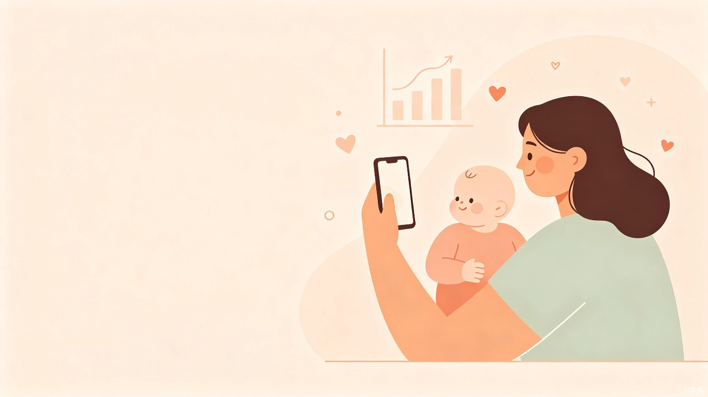
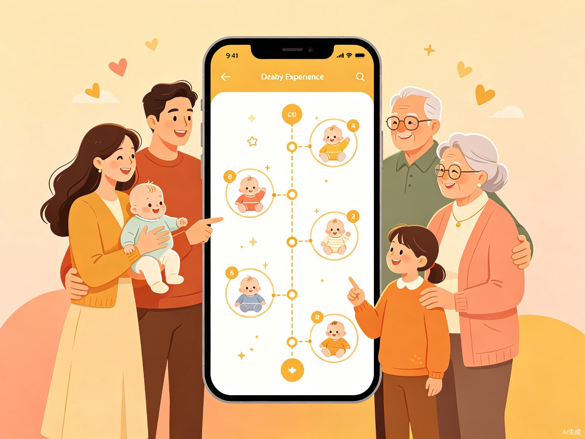

为什么"宝宝成长记录"是一个值得投入的方向？让我们先看看市场的大图景。
中国母婴行业整体规模已突破 3.2万亿元，其中儿童成长记录软件细分赛道在2025年达48.6亿元，2026年预计增长至54.6亿元，年复合增长率维持在12.3%[1]。与此同时，母婴小程序交易额在2024年已达 8320亿元，同比增长23.4%[2]——小程序已成为母婴行业核心流量入口。
2025年73%头部产品已接入多模态识别引擎，AI自动识别发育里程碑、整理相册、生成成长报告，记录效率提升4.2倍[1]。
订阅制SaaS收入占比已达68.5%，行业付费转化率31.8%，月均ARPU值32.7元[1]。商业模式已验证可行。
2025年七部门联合要求幼儿园数字化成长记录工具覆盖率不低于68.3%，中央财政单列9.8亿元专项补贴[1]。
三线及以下城市用户同比增长28.4%，县级市覆盖率仅41.8%，增长空间巨大[1]。
关键信号："AI+母婴"是2025年投融资唯一热门方向，融资事件占比超50%[3]。AI不再是锦上添花，而是产品的核心能力壁垒。
用户的核心痛点是什么？理解痛点，才能找到差异化的切入点。
核心洞察：市场呈现"两极分化"——综合平台"太重"（亲宝宝/宝宝树），轻量工具"太轻"（Piyo日志/一木宝宝）。能够做到"核心功能完善 + 无干扰体验"的产品，存在明确的差异化空间[4]。
在明确了痛点之后，我们需要选择合适的产品形态。不同形态意味着不同的获客难度、开发成本和变现路径。
| 类型 | 代表产品 | 优势 | 劣势 |
|---|---|---|---|
| 综合平台 | 亲宝宝、宝宝树 | 功能全面、用户量大、变现路径多元 | 体验臃肿、开发成本极高、竞争壁垒高 |
| 垂直记录工具 | 一木宝宝、Piyo日志 | 体验干净、口碑好、开发可控 | 功能不足需多App组合、变现难 |
| 社区+工具 | 爸妈营（100万用户） | 高粘性、UGC驱动增长、可裂变 | 社区运营难度高、冷启动慢 |
| 硬件+软件 | 成长记录仪、亲宝宝AI看护器 | 数据获取天然、差异化强 | 硬件成本高、供应链复杂 |
| 微信小程序 | 妈妈网亲子记、臭宝喂养 | 零门槛获客、社交裂变、开发快 | 功能深度受限、品牌感知弱 |
建议采用"微信小程序MVP → 验证需求 → 迭代为独立App/社区"的策略。原因如下：
妈妈网亲子记上线7天收获100万新用户，一个记录用户平均带来20+新用户[9]。小程序的社交裂变能力在母婴赛道已被充分验证。
微信是老人唯一高频使用的APP，小程序无需下载安装，直接降低家庭多角色参与门槛，解决"爸爸/爷爷奶奶用不了"的核心痛点。
相比独立App，小程序迭代更快、发版更灵活，适合早期MVP验证。验证成功后再向独立App过渡，降低风险。
精准定义目标用户，才能设计出真正击中需求的产品。90后/95后已成为育儿主力人群，他们有着截然不同的育儿理念。
"我们拒绝'牺牲式育儿'，主张'先做自己，再做父母'。我们想要科学的数据指导，而不是长辈的经验说教。"
一二线城市白领，刚休完产假回归职场，对宝宝发育高度关注但缺乏经验。日常高频使用微信，习惯通过小红书/抖音获取育儿知识。核心需求：科学记录 + 发育参考 + 家人共享。
愿意参与育儿但不知道从何入手，使用育儿App的男性用户极少[7]。需要门槛极低的产品引导参与记录（如"一键拍照记录"）。爸爸参与度高 = 家庭留存率高 = 裂变潜力大。
帮助带娃但不会用复杂App，微信是唯一入口。希望随时看到宝宝最新动态，参与点赞评论。亲宝宝超1亿注册用户中40%为祖辈[5]，这个群体的需求远未被充分服务。
56%靠母婴社区学知识，52%靠内容平台种草，21%靠电商看评论——多渠道交叉验证已成常态[8]。
95后拥抱平等开放的亲子关系，转向天性释放的"孩本位"新哲学，拒绝贩卖焦虑[12]。
用户在什么情境下会用到这个产品？场景决定了功能的优先级和交互设计的方向。
| 场景 | 用户行为 | 核心需求 | 功能映射 |
|---|---|---|---|
| 日常随手记录 | 喂奶后、换尿布后、宝宝微笑时 | 3秒内完成记录，不打断育儿节奏 | 一键拍照/语音记录、AI自动分类 |
| 里程碑时刻 | 第一次翻身、第一口辅食、第一步 | 仪式感 + 自动识别 + 纪念册生成 | AI里程碑识别、时间轴高亮、一键分享 |
| 家庭共享互动 | 妈妈记录 → 爸爸点赞 → 爷爷奶奶看动态 | 无需安装，微信内直接互动 | 微信小程序 + 家庭圈 + 通知推送 |
| 儿保/体检对照 | 定期体检前后查看生长曲线 | WHO标准对照 + 个性化解读 | 生长曲线图 + AI发育评估报告 |
| 睡前回顾 | 哄睡时翻看宝宝成长记录 | 治愈感 + 自动生成的成长微电影 | 月度回顾、AI配图文、时光胶囊 |
| 育儿知识查询 | 遇到喂养/睡眠/疾病疑问时 | 个性化、精准的月龄适配指导 | AI育儿助手（基于宝宝数据） |
你的产品为用户创造什么价值？价值越清晰，产品的存在理由越充分。

"帮我高效记录，不再遗漏"——AI自动整理照片、智能分类喂养/睡眠/里程碑数据，将记录门槛从"15分钟写日记"降至"3秒拍照"。WHO生长曲线、疫苗接种提醒等功能提供不可替代的工具价值，成为用户持续打开的理由。
"帮我和家人一起见证成长"——通过家庭共享圈、时光胶囊、月度成长微电影等功能，让记录变成一种家庭仪式。爸爸的点赞、爷爷奶奶的评论、宝宝第一次翻身的自动标记，构成不可替代的情感连接，这是用户留存的关键。
"帮我更好地理解宝宝"——基于积累的成长数据，AI生成个性化发育评估报告、喂养建议、异常预警。不是通用AI回答，而是结合宝宝实际数据的精准指导。这一层既是技术壁垒，也是付费订阅的核心卖点[5]。
区别于亲宝宝的"太重"和Piyo的"太轻"，做到核心功能完善（记录+生长曲线+疫苗+家庭共享）+ 零广告零商城的纯净体验。
微信小程序形态，老人零门槛参与。专属设计"爸爸记录任务"引导父亲参与，解决爸爸缺席的社会痛点。
不仅记录，还理解。AI基于宝宝数据提供发育评估、喂养建议，让记录产生"反馈闭环"，解决"记录了但不知道正不正常"的焦虑。
现有产品在6岁后几乎空白[7]。从孕期/新生儿延伸至学龄前甚至小学低年级，覆盖更长的用户生命周期。
了解竞争对手的定位和弱点，才能找到自己的生态位。
| 产品 | 定位 | 核心数据 | 弱点 |
|---|---|---|---|
| 亲宝宝 | 家庭共享式育儿平台 | 注册用户1.8亿，付费会员12%，毛利率76.3%[13] | 太重：广告/商城/社区/直播充斥 |
| 宝宝树 | 育儿知识+社区 | MAU 3200万，覆盖60%新生儿家庭[13] | 社区质量差，软文带货，信任度低 |
| 一木宝宝 | 安静记录工具 | 口碑好，用户忠诚度高 | 功能单一，无AI，无社区，无发育评估 |
| 爸妈营 | 社区+亲子日记 | 注册用户100万[7] | 社区运营重，非工具型，冷启动难 |
"安静工具"与"全能平台"之间的空白地带：一个AI驱动的微信小程序，做到记录体验干净 + 核心功能完整 + 家庭全角色参与 + AI智能反馈。这恰恰是当前市场中没有产品占据的位置。
思路清晰后，下一步是什么？以下是建议的阶段性路径。
深度访谈5-10位新手父母，验证痛点优先级。确定MVP功能范围（建议：照片记录+时间轴+生长曲线+家庭共享），完成低保真原型。
基于微信小程序框架开发核心功能。邀请20-50位目标用户内测，收集反馈。重点关注"3秒记录"体验和家庭共享流畅度。
设计社交裂变机制（如"邀请爷爷奶奶看宝宝日记"）。围绕节日/里程碑设计UGC活动。监控留存率（目标7日留存 > 40%）。
接入AI能力：照片自动分类、发育里程碑识别、AI发育报告。探索订阅制（高级AI报告/去水印导出纪念册）和线下服务导流。
最后提醒：亲子赛道竞争激烈但远未饱和。关键不在于做更多功能，而在于在正确的细分定位上做到极致体验。"安静且智能的成长记录工具"这个定位，既有市场验证，又有差异化空间，值得一试。